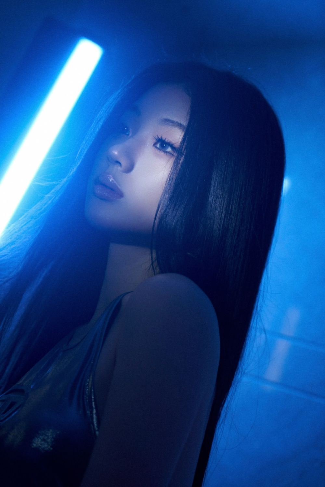
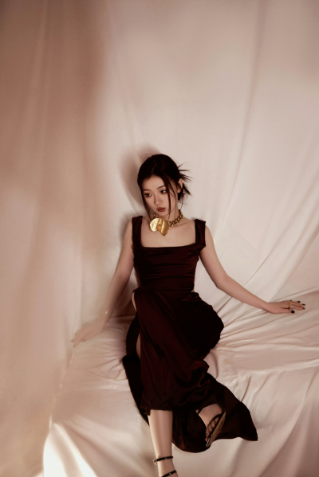
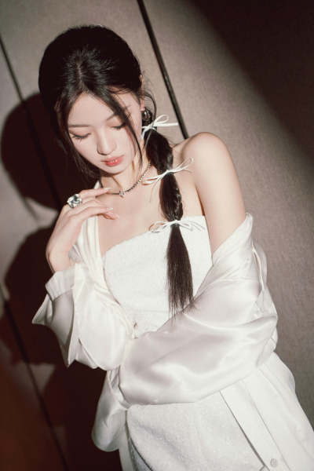
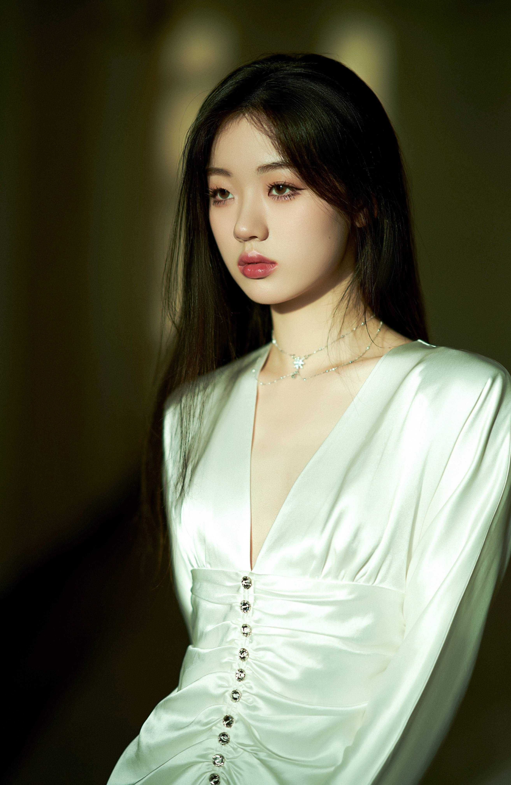

COMPETITION
竞演舞台
在有限时间里建立完整叙事，声音控制与临场稳定性被同时放大。
Live
不同舞台有不同尺度，但真实演唱始终是核心。这里按场景梳理她的现场表达，而不是虚构巡演场次。
On Stage
竞演看控制，晚会看适配，开放舞台看现场交流。

在有限时间里建立完整叙事，声音控制与临场稳定性被同时放大。

面对不同编曲、搭档与节目语境，找到属于自己的声音位置。

更直接地回应观众，让节奏、互动和即兴成为演唱的一部分。
Live Details
先用较轻的声量建立距离，让歌词自然进入，再逐步增加情绪密度。
真假声转换与气息连接相对平滑，强弱变化不会破坏旋律的连贯性。
高潮之后愿意回到安静，让最后一句真正承担歌曲的余韵。
